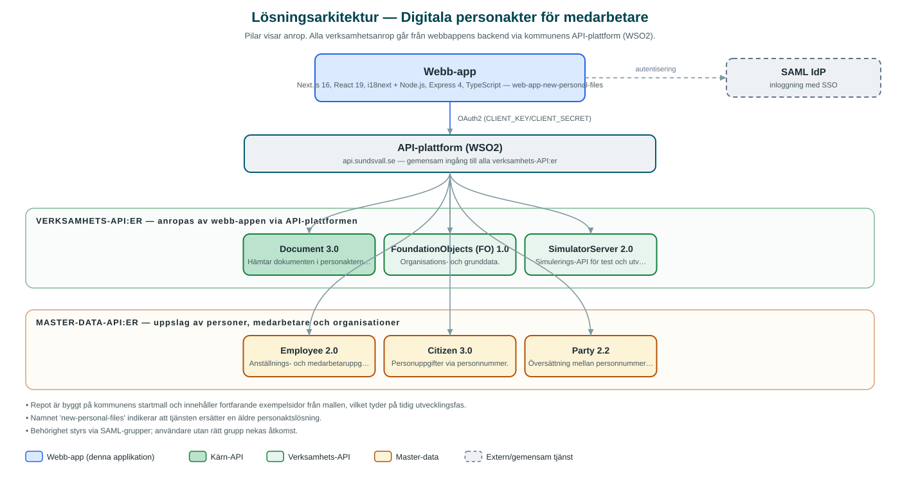

Digitala personakter för medarbetare
Intern tjänst där medarbetare kan se sin egen personakt, chefer kan se sina medarbetares akter och behörig personal kan söka fram personakter.
Om applikationen
Tjänsten samlar medarbetarnas personakter digitalt. En inloggad medarbetare kan öppna sin egen personakt, medan chefer ser en lista över sina medarbetare och kan öppna deras akter. Behörig personal kan dessutom söka fram en personakt genom att ange fullständigt personnummer.
Dokumenten i akterna hämtas från kommunens centrala dokumenttjänst, och organisationstillhörighet och anställningsuppgifter hämtas från kommunens personal- och organisationsdata.
Tjänsten är under uppbyggnad och namnet antyder att den ersätter en tidigare lösning för personakter.
Det här stödjer applikationen
- Min personakt – Medarbetare ser dokumenten i sin egen personakt.
- Mina medarbetare – Chefer ser sina medarbetare och kan öppna deras personakter.
- Sök personakt – Behörig personal söker fram akter via fullständigt personnummer.
- Central dokumentlagring – Handlingarna hämtas från kommunens gemensamma dokumenttjänst.
Teknisk dokumentation
Nedan beskrivs hur applikationen är uppbyggd, vilka API:er den använder och vad som krävs för att driftsätta den. Informationen är härledd ur källkoden och dess konfiguration på GitHub.
Arkitektur

Applikationen består av en webbaserad frontend (Next.js 16, React 19, i18next) och en backend (Node.js, Express 4, TypeScript) som utvecklas i samma kodbas. Verksamhetsanrop går via kommunens gemensamma API-plattform (WSO2) – frontend pratar aldrig direkt med underliggande system. Inloggning: SAML (SSO). Övriga integrationer som förekommer i koden: SAML IdP.
Teknikstack
- Frontend: Next.js 16, React 19, i18next
- Backend: Node.js, Express 4, TypeScript
- Test: Jest (enhetstester), Cypress (e2e)
API-beroenden
Applikationen konsumerar följande API:er via kommunens API-plattform. Versionerna är hämtade ur källkodens API-konfiguration.
| API | Version | Användning |
|---|---|---|
| Document | 3.0 | Hämtar dokumenten i personakterna. |
| FoundationObjects (FO) | 1.0 | Organisations- och grunddata. |
| SimulatorServer | 2.0 | Simulerings-API för test och utveckling. |
| Employee | 2.0 | Anställnings- och medarbetaruppgifter, bl.a. chefers medarbetarlistor. |
| Citizen | 3.0 | Personuppgifter via personnummer. |
| Party | 2.2 | Översättning mellan personnummer och part-ID. |
Konfiguration och driftsättning
- Miljöfiler: frontend/.env-example och backend/.env.example.local
- CLIENT_KEY och CLIENT_SECRET mot kommunens API-plattform (WSO2)
- SAML-inställningar med IdP-adress och certifikat
Noterbart ur källkoden
- Repot är byggt på kommunens startmall och innehåller fortfarande exempelsidor från mallen, vilket tyder på tidig utvecklingsfas.
- Namnet 'new-personal-files' indikerar att tjänsten ersätter en äldre personaktslösning.
- Behörighet styrs via SAML-grupper; användare utan rätt grupp nekas åtkomst.
Källkod
Källkoden är öppen och finns hos Sundsvalls kommun på GitHub. I källkodsförrådet finns även instruktioner för att klona, konfigurera och starta applikationen i egen miljö.